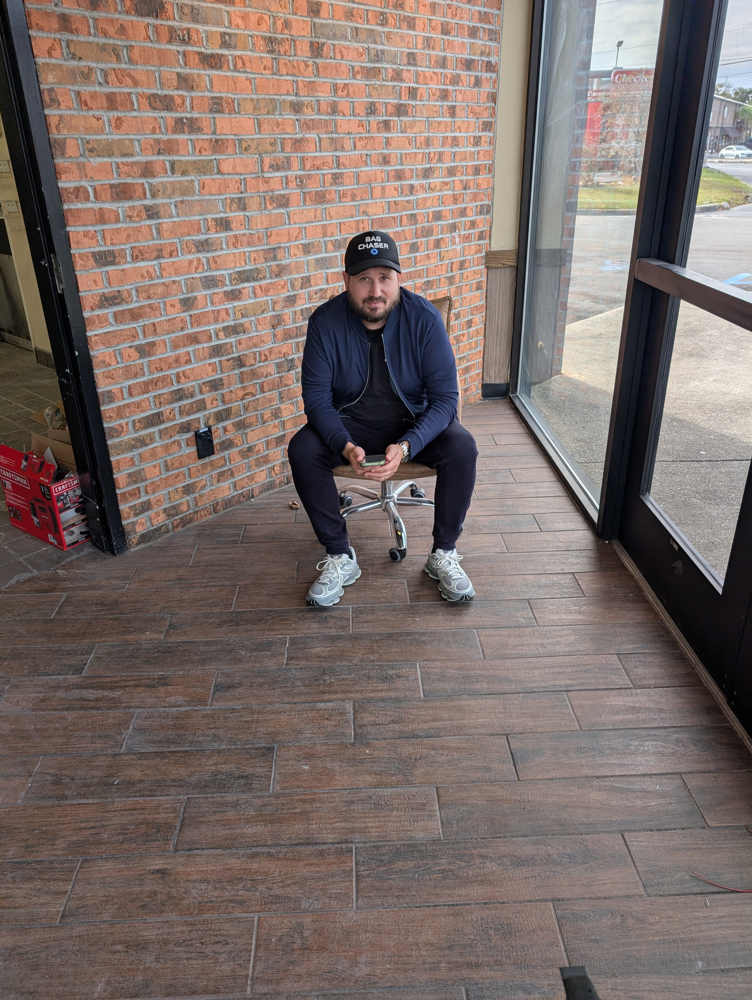

Restaurant Consulting From Real Restaurant Owners.
At Resto Roth, we believe restaurant consulting should come from people who actually understand what it takes to own, operate and grow a restaurant. We help independent restaurant owners make better decisions, solve problems and improve their businesses with practical guidance based on real operating experience.

Real restaurant experience makes the difference.
Opening and running a restaurant takes much more than having a good concept or a great menu. It requires hundreds of decisions about costs, people, equipment, pricing, service, marketing and daily operations.
At Resto Roth, our perspective comes from actively owning and operating restaurants. We understand that even small decisions can have a significant effect on profitability, and that independent restaurant owners don't have unlimited time or money to experiment.
Resto Roth was built around a straightforward idea: restaurant owners should have access to advice from people who have firsthand experience running the type of business they're trying to improve.
Whether you're opening your first location, facing challenges with an existing restaurant or considering expansion, our goal is to help you move forward with a clearer plan.
Spend smarter. Build better. Keep improving.
Strong restaurants are built on thoughtful decisions, efficient systems, realistic financial planning and consistent execution.
Our restaurant consulting is designed around practical solutions that work in real restaurant environments.
Practical restaurant consulting. No unnecessary complexity.
We believe independent restaurant owners deserve useful advice that respects their time, budget and business goals.
Real-World Thinking
Our recommendations reflect the everyday challenges of running restaurants, not just theoretical business models. We understand what it means to manage a business where every decision matters.
Respect for Your Budget
We look for practical solutions that make financial sense for independent restaurant owners. Sometimes the smartest move isn't the most expensive one.
Long-Term Improvement
We focus on systems, strategies and operational improvements that can continue delivering value as your restaurant grows and changes.
We know what it's like behind the counter.
Restaurant consulting at Resto Roth is based on firsthand experience with the many moving parts of restaurant ownership.
From evaluating equipment and building menus to managing staffing, customer service, operating costs and local marketing, we understand how each area of a restaurant affects the others.
Our goal is to help entrepreneurs start their first location, improve existing operations and create opportunities for sustainable growth.
Work With Resto RothWhere We Can Help
Your restaurant is unique. Your consulting should be too.
Resto Roth offers flexible restaurant consulting based on the needs of your individual business. You might need advice on a single issue, help fixing a struggling department or guidance across your entire operation.
We approach every conversation with the practical perspective of people who know what restaurant ownership involves. No generic advice or unnecessary complexity.
Talk to a Restaurant ConsultantReal businesses behind our advice.
Resto Roth's consulting approach is grounded in active restaurant ownership and the practical demands of managing a business. Our experience shapes the recommendations we make and the solutions we develop.
Our Restaurant Operations
Add actual restaurant names, locations, photographs and a brief description of your ownership and operating experience to demonstrate your background.
Lessons From the Business
Add an authentic example of a challenge you solved, an operational improvement you made or a cost-conscious business decision that produced meaningful results.
Let's put real ownership experience to work for your restaurant.
Whether you're opening your first restaurant, facing operational challenges or working toward your next stage of growth, we're here to help you develop a practical plan.
Tell us about your restaurant, your goals and the kind of support you're looking for.
Book a Restaurant Consultation